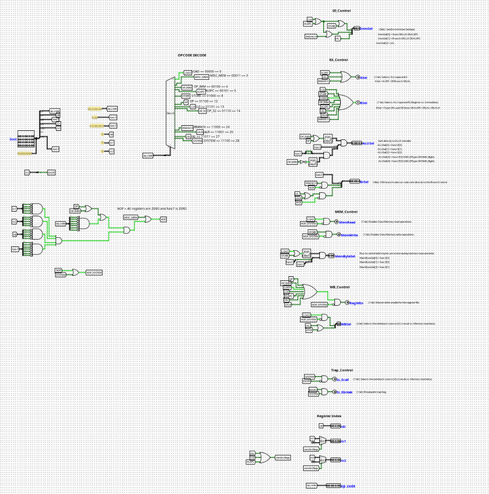

Main Control Unit
Overview
The Main Control Unit decodes the 32-bit instruction word and generates all control signals required to drive the datapath for one instruction cycle. It is the central decision-making block of the CPU — every downstream unit (ALU, register file, memory, branch logic, immediate generator) receives its operating mode from signals produced here.
- Purpose in CPU: Decode the current instruction and assert the correct combination of control signals for every pipeline stage.
-
Role in datapath: Sits in the ID stage; its outputs fan out to the EX, MEM, and WB stages as well as to the branch and immediate generation units.
-
Source:
logisim/RiskVControl.circ
Interface
Inputs
| Signal | Width | Description |
|---|---|---|
Inst[31:0] |
32 | Full 32-bit instruction word fetched from instruction memory. |
Outputs
The outputs are grouped by the pipeline stage they control.
ID Control
| Signal | Width | Description |
|---|---|---|
ImmSel[2:0] |
3 | Immediate format selector sent to the Immediate Generator. ImmSel[0] = STORE | LUI | AUIPC. ImmSel[1] = BRANCH | LUI | AUIPC. ImmSel[2] = JAL. |
EX Control
| Signal | Width | Description |
|---|---|---|
ASel |
1 | Selects ALU operand A. Asserted for AUIPC, BRANCH, and JAL (uses PC); deasserted for register. |
BSel |
1 | Selects ALU operand B. Asserted for I-type, LOAD, STORE, AUIPC, JAL, JALR (uses immediate); deasserted for register. BSel = IType OR LOAD OR STORE OR AUIPC OR JAL OR JALR. |
ALUSel[4:0] |
5 | ALU operation selector sent directly to the ALU Controller. ALUSel[2:0] = funct3[2:0]. ALUSel[3] = funct7[5] AND (R-type OR IShift_Right). ALUSel[4] = funct7[0] AND (R-type OR IShift_Right). |
BrSel[4:0] |
5 | Branch selector bus sent to the Branch Control Unit. Encodes funct3, Is_Branch, and Is_Jump. |
MEM Control
| Signal | Width | Description |
|---|---|---|
MemRead |
1 | Enables Data Memory read operations. Asserted for LOAD only. |
MemWrite |
1 | Enables Data Memory write operations. Asserted for STORE only. |
MemByteSel[2:0] |
3 | Controls which bytes are active during memory read/write. Derived from funct3: MemByteSel[0] = funct3[2], MemByteSel[1] = funct3[0], MemByteSel[2] = funct3[1]. |
WB Control
| Signal | Width | Description |
|---|---|---|
RegWEn |
1 | Master write-enable for the register file. Deasserted for STORE, BRANCH, and NOP/SYSTEM. |
WBSel[1:0] |
2 | Selects the writeback source (ALU result, memory read data, or PC+4). |
Trap Control
| Signal | Width | Description |
|---|---|---|
Is_Ecall |
1 | Asserted when the instruction is an ecall system call. |
Is_Ebreak |
1 | Breakpoint trap flag. Asserted when the instruction is ebreak. |
Register Index Passthrough
| Signal | Width | Description |
|---|---|---|
op_code[6:0] |
7 | Raw opcode field passed through to downstream units. |
rdi[4:0] |
5 | Destination register index (Inst[11:7]). |
rs1[4:0] |
5 | Source register 1 index (Inst[19:15]). Zeroed for instructions that have no rs1. |
rs2[4:0] |
5 | Source register 2 index (Inst[24:20]). Zeroed for instructions that have no rs2. |
Output Logic (Core Definition)
Opcode Decode Table
The 7-bit opcode field (Inst[6:0]) is decoded by a 5-bit splitter (bits [6:2]) feeding a 32-output decoder. Each named tunnel corresponds to one opcode:
| Opcode Name | op[6:2] (binary) |
Decimal |
|---|---|---|
LOAD |
00000 |
0 |
MISC_MEM |
00011 |
3 |
OP_IMM |
00100 |
4 |
AUIPC |
00101 |
5 |
STORE |
01000 |
8 |
OP |
01100 |
12 |
LUI |
01101 |
13 |
OP_32 |
01110 |
14 |
BRANCH |
11000 |
24 |
JALR |
11001 |
25 |
JAL |
11011 |
27 |
SYSTEM |
11100 |
28 |
Rule-based definition
- If opcode =
LOAD: MemRead= 1,RegWEn= 1,BSel= 1,ALUSrc= register + immediate (ADD)- If opcode =
STORE: MemWrite= 1,RegWEn= 0,BSel= 1- If opcode =
OP(R-type): RegWEn= 1,ASel= 0,BSel= 0,ALUSeldriven byfunct3+funct7- If opcode =
OP_IMM(I-type): RegWEn= 1,ASel= 0,BSel= 1,ALUSel[2:0]=funct3- If opcode =
BRANCH: RegWEn= 0,ASel= 1,BSel= 0,BrSel[3](Is_Branch) = 1- If opcode =
JAL: RegWEn= 1,ASel= 1,BSel= 1,BrSel[4](Is_Jump) = 1,ImmSel[2]= 1- If opcode =
JALR: RegWEn= 1,ASel= 0,BSel= 1,BrSel[4](Is_Jump) = 1- If opcode =
LUI: RegWEn= 1,ImmSel[0]= 1,ImmSel[1]= 1,zeroSrcRegs= 1- If opcode =
AUIPC: RegWEn= 1,ASel= 1,BSel= 1,ImmSel[0]= 1,ImmSel[1]= 1- If opcode =
SYSTEM: Is_EcallorIs_Ebreakasserted based oninst[20]; all other control signals deasserted (treated as NOP)- If NOP (all register fields and
funct7= zero): - All control signals deasserted
Boolean expressions
ASel = AUIPC OR BRANCH OR JAL
BSel = OP_IMM OR LOAD OR STORE OR AUIPC OR JAL OR JALR
RegWEn = NOT(NOP_SYSTEM) AND NOT(STORE) AND NOT(BRANCH)
MemRead = LOAD AND NOT(NOP_SYSTEM)
MemWrite = STORE AND NOT(NOP_SYSTEM)
ImmSel[0] = STORE OR LUI OR AUIPC
ImmSel[1] = BRANCH OR LUI OR AUIPC
ImmSel[2] = JAL
ALUSel[2:0] = funct3[2:0]
ALUSel[3] = funct7[5] AND (OP OR IShift_Right)
ALUSel[4] = funct7[0] AND (OP OR IShift_Right)
MemByteSel[0] = funct3[2]
MemByteSel[1] = funct3[0]
MemByteSel[2] = funct3[1]
Internal Design
The circuit is structured into the following functional zones:
- Instruction Splitter: A 32-bit splitter at the
Instinput distributes instruction fields to named tunnels:op_code[6:0],funct3[2:0],funct7[6:0],rdi[4:0],rs1[4:0],rs2[4:0], andinst20(bit 20, used for SYSTEM decode). - Opcode Decoder: The upper 5 bits of the opcode (
op_code[6:2]) feed a 32-output decoder (lib Plexers). Each active decoder output drives a named tunnel corresponding to an instruction type (LOAD, STORE, OP, etc.). - NOP Detection: Four AND gates with all inputs inverted check that
rs1,rs2,rdi, andfunct7are all zero. Their combined output asserts theNOPtunnel. - NOP_SYSTEM: An OR gate combines
NOPandSYSTEMinto a shared suppression signal used to gateMemRead,MemWrite, andRegWEn. - Control Signal Logic: Each output signal is derived from OR/AND gate networks over the decoded opcode tunnels, as described in the boolean expressions above. Key structures include:
- A 7-input OR gate for
WBSelandRegWEn. - A 3-bit AND gate (with NOT on
NOP_SYSTEM) forMemByteSel. - A 5-bit AND gate for
ALUSelpassthrough gating. - A 2-to-1 MUX each for
rs1andrs2zeroing whenzeroSrcRegsis asserted (LUI, JAL, AUIPC). - Register Index Passthrough:
rdi,rs1, andrs2are passed through directly. For instructions with no source registers (LUI, JAL, AUIPC), thezeroSrcRegssignal selects constant0x0on the MUX output instead. - SYSTEM Decode:
inst20(bit 20 of the instruction word) distinguishesecall(0) fromebreak(1) whenSYSTEMis active. An AND gate with invertedinst20drivesIs_Ecall; an AND gate without inversion drivesIs_Ebreak.
All logic is purely combinational. No registers or flip-flops are present.
Operation
Inst[31:0]arrives from Instruction Memory via the IF/ID pipeline register.- The 32-bit splitter distributes instruction fields to named tunnels throughout the circuit.
- The 5-bit opcode (
Inst[6:2]) is decoded by the 32-output decoder; the matching output line goes high. - NOP detection logic checks all register fields and
funct7for all-zero; assertsNOPif true. NOP_SYSTEMis formed by OR-ingNOPandSYSTEM, gating memory and register write enables.- All control outputs are resolved combinationally through their respective gate networks in the same cycle.
- Outputs fan out to the ID/EX pipeline register, the Branch Control Unit, the Immediate Generator, and the register file read ports.
Pipeline Interaction
- Active in the ID stage; all outputs are registered into the ID/EX pipeline register at the end of the cycle.
ImmSelis consumed by the Immediate Generator in the same ID stage cycle.BrSelis consumed by the Branch Control Unit in the same ID stage cycle.ALUSel,ASel,BSelpropagate to the EX stage.MemRead,MemWrite,MemByteSelpropagate to the MEM stage.RegWEn,WBSelpropagate to the WB stage.- When a NOP or flush is injected into the pipeline,
NOP_SYSTEMsuppresses all write-enabling outputs, effectively making the instruction a no-op.
Examples
Example: ADD (R-type)
Inputs:
Inst=0x00208033(ADD x0, x1, x2)op[6:2]=01100(OP),funct3=000,funct7[5]= 0
Outputs:
ALUSel=00000,ASel= 0,BSel= 0,RegWEn= 1,MemRead= 0,MemWrite= 0
Example: LW (LOAD)
Inputs:
op[6:2]=00000,funct3=010
Outputs:
MemRead= 1,BSel= 1,RegWEn= 1,ImmSel=000,MemByteSel=010(word)
Example: SW (STORE)
Inputs:
op[6:2]=01000,funct3=010
Outputs:
MemWrite= 1,BSel= 1,RegWEn= 0,MemByteSel=010
Example: BEQ (BRANCH)
Inputs:
op[6:2]=11000,funct3=000
Outputs:
ASel= 1,BSel= 0,RegWEn= 0,BrSel=01000(Is_Branch=1,funct3=000)
Example: JAL
Inputs:
op[6:2]=11011
Outputs:
ASel= 1,BSel= 1,RegWEn= 1,ImmSel=100(JAL),BrSel[4]= 1 (Is_Jump)
Example: LUI
Inputs:
op[6:2]=01101
Outputs:
RegWEn= 1,ImmSel=011,zeroSrcRegs= 1 (rs1= 0,rs2= 0)
Example: NOP
Inputs:
Inst=0x00000013(ADDI x0, x0, 0 — canonical NOP)- All register fields and
funct7= zero
Outputs:
- All write enables deasserted (
RegWEn= 0,MemRead= 0,MemWrite= 0)
Limitations / Assumptions
- Assumes valid RV32I instruction encoding on
Inst[31:0]. OP_32(64-bit extension opcodes) is decoded but not fully handled — outputs are not defined for this opcode in the current implementation.MISC_MEM(FENCE) is decoded but treated as a passthrough with no memory ordering enforcement.- No exception handling for illegal or malformed instruction encodings.
- SYSTEM instruction decode is limited to
ecall/ebreakviainst20; no CSR instruction handling. - NOP detection relies on all register fields and
funct7being zero — non-standard NOPs may not be caught. - Combinational propagation delay not modeled.
Implementation Notes
- Single input pin:
Inst[31:0]. - Instruction fields distributed via a multi-fanout splitter with named tunnel labels.
- Opcode decoded using a Logisim Plexers
Decodercomponent with a 5-bit select input (op_code[6:2]). - Named tunnels used extensively to route signals across the circuit without long wire runs.
rs1andrs2zero-suppression implemented with 2-to-1 MUX components controlled byzeroSrcRegs.MemByteSelformed by a 3-bit AND gate gated withNOT(NOP_SYSTEM).ALUSelformed by a 5-bit AND gate combiningfunct3/funct7bits with opcode qualifiers.- All standard Logisim-evolution components; no external libraries.
- Signal widths follow RV32I spec.